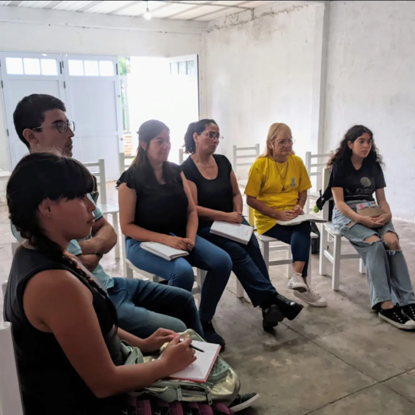

Nuestro fundamento es la Palabra de Dios que es viva y eficaz, entendiendo que la adoración es un estilo de vida que nos llena de esperanza y plenitud eterna.
Podemos tener una voz técnicamente entrenada, al igual que destreza en un instrumento; pero nunca debemos olvidar que en el centro absoluto debe estar la persona más importante: Cristo.
Cimentados firmemente en las Escrituras como brújula inquebrantable.
Saneando el altar interior antes de ministrar ante las personas.
Un estilo de vida continuo, no una simple presentación musical.
Derribando límites: un ámbito ministerial pensado para edificar a cada hijo de Dios.
¡No! Es para cantantes, músicos y toda la comunidad de hijos de Dios.
Es para todo aquel que sienta el llamado en su corazón de expresar a Cristo a través de la música y la comunión. ¡Que nada sea hoy un impedimento para poder crecer!
Para quienes desean pulir su voz con propósito eterno, aprendiendo a cantar desde la intimidad del Padre y no solo desde la técnica.
Para tecladistas, guitarristas, bateristas y músicos que buscan sintonizar sus notas con la atmósfera del cielo y servir en unidad.
Líderes, intercesores, servidores y todo creyente con el anhelo de profundizar en una vida rendida al adorador de adoradores.
“Todo lo que respira alabe al Señor. ¡Aleluya!”
Una jornada integral pensada para edificar tu espíritu, nutrir tu corazón y capacitar tus dones prácticos.
Tiempos de enseñanza profunda e inspiración guiada por la Palabra.
Herramientas prácticas, fundamentos y desarrollo ministerial.
Tiempo congregacional de búsqueda íntima y adoración espontánea.
Comunión fraternal, refrigerio y charlas para enriquecer el alma.
Espacios participativos para compartir experiencias y orar juntos.

No se trata de un concierto, sino de un punto de encuentro donde derramamos nuestro corazón delante del Rey. Viviremos tiempos de adoración genuina donde cada acorde y cada respiración buscan exclusivamente la gloria de Cristo.
“El Padre está cantando una canción que necesita ser escuchada en las naciones de la tierra... y nosotros ser esos traductores de los tesoros de su corazón.”
Un punto de encuentro abierto para crecer, ministrar en comunión y encender el altar de adoración.
Calle 453 N° 1665, Gutiérrez (Berazategui, Bs. As.)
Encuentros presenciales, módulos prácticos y tiempos de altar
Presencial · Para músicos, cantantes y toda la congregación
Inscripciones activas para las próximas ediciones de capacitación